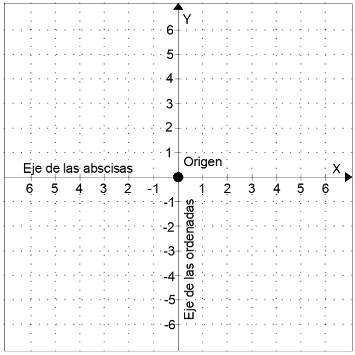
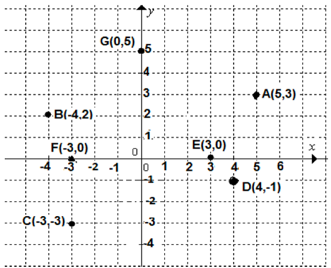
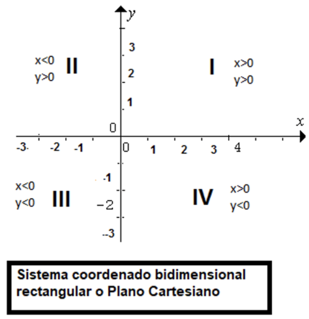

El punto en el plano cartesiano
Aprendizaje:
Representa la ubicación de un punto en el plano utilizando un sistema de referencia cartesiano y viceversa.
Antes de iniciar con la lectura, te invitamos a ver el siguiente video que explica los elementos que deberás tener presentes en la unidad.
Elementos básicos de geometría analítica.
Te invitamos a participar en el siguiente foro de discusión.
Importancia de sistemas de referencia y plano cartesiano
Introducción
Para localizar un punto en el plano es conveniente construir un sistema a partir de un punto fijo llamado origen, para que se pueda medir la distancia horizontal y vertical de un punto deseado. Se traza una recta real horizontal la cual recibe el nombre eje de las abscisas (se representa por ”x”) y una vertical la cual recibe el nombre de eje de las ordenadas (se representa por “y”) que intersecan en este punto fijo que llamamos origen. Estas rectas reales se dividen en intervalos regulares de tal manera que se pueden numerar hacia la derecha (números reales positivos) o a la izquierda (números reales negativos), hacia arriba (números reales positivos) y abajo (números reales negativos), donde el origen es el cero. De esta manera se construye lo que se conoce como sistema de coordenadas cartesianas.

Figura 1: Sistema de coordenadas cartesianas (imagen propia).
Pares de ordenadas o coordenadas de un punto
Al punto P en el plano cartesiano le corresponden dos coordenadas, la primera indica la distancia horizontal y la segunda la distancia vertical con las que se ubica el punto; primero localizamos la distancia en eje x para seguir con la distancia en eje y. A cada punto le corresponde un par ordenado (x, y) y cada par ordenado (x, y) le corresponde solamente un punto en el plano.
El sistema coordenado rectangular en el plano establece una correspondencia biunívoca entre cada punto del plano y un par ordenado de números reales.

Figura 2: Sistema de coordenadas cartesianas.
Sistema de coordenadas
Ve el siguiente video:
La recta horizontal recibe el nombre eje de las abscisas y se representa por x, y la recta vertical recibe el nombre eje de las ordenadas que se representa por y. Estas dos rectas determinan al plano cartesiano, el cual está dividido en cuatro cuadrantes.
Al punto P en el plano cartesiano le corresponden dos coordenadas: la primera indica la distancia horizontal y la segunda la distancia vertical con las que se ubicará el punto. Primero localizamos la distancia en eje x para seguir con la distancia en eje y. A cada punto le corresponde un par ordenado (x, y) y cada par ordenado (x, y) le corresponde solamente un punto en el plano.

Figura 1: Sistema de coordenadas cartesianas (imagen propia).